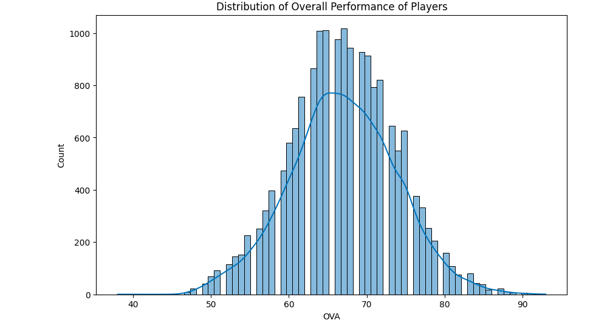
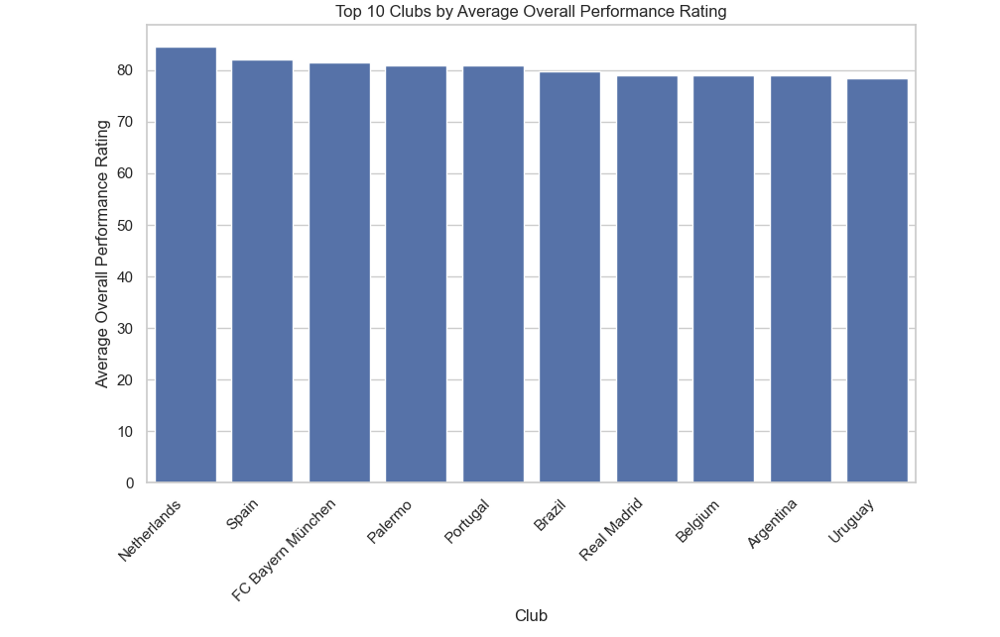
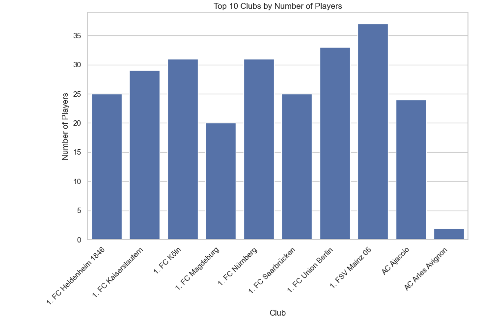
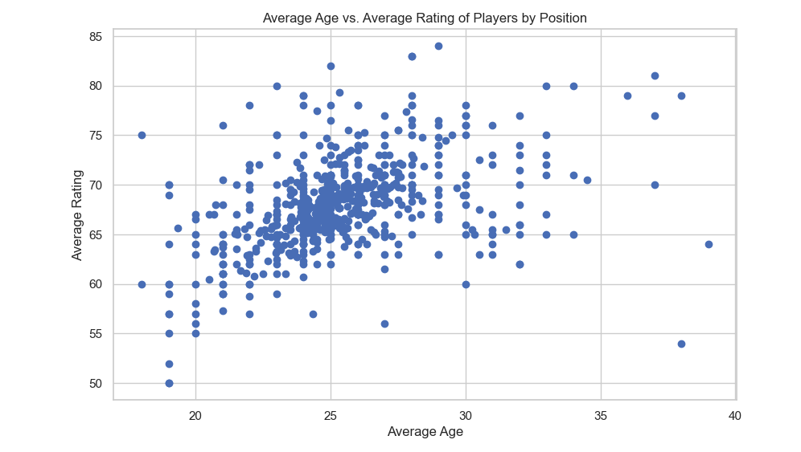

Project Details
FIFA 2021 Analysis Project 🎮⚽📊
Introduction
The FIFA 2021 Analysis project delves into the extensive exploration of the FIFA 2021 male player dataset. The primary objectives are to gain insights into player performance metrics, analyze club statistics, explore player attributes, and apply machine learning techniques for clustering.
Dataset 📈
The dataset utilized for this analysis comprises information about FIFA 2021 male players, including attributes such as overall performance rating, age, club, and position.
Exploratory Data Analysis (EDA) 📊
Distribution of Overall Performance
The project begins by examining the distribution of overall performance ratings of players. This analysis provides a comprehensive view of the skill levels of the players in the dataset.
Top 10 Clubs by Average Overall Performance Rating
Identifying the top-performing clubs based on the average overall performance rating offers insights into the teams with the most skilled players.
Top 10 Clubs by Number of Players
Analyzing the distribution of players among clubs helps in understanding the team dynamics and player representation across different football clubs.
Average Age vs. Average Rating of Players by Position
This analysis explores the relationship between player age and overall performance rating, segmented by player position. It aims to uncover trends and patterns in player development.
Correlation Heatmap of Numerical Variables 🌐
The correlation heatmap visualizes the relationships between numerical variables such as age, overall performance rating, and other player attributes. Identifying correlations helps in understanding the impact of different factors on player performance

Clustering Score by Elbow Method
Applying the elbow method to determine the optimal number of clusters in the dataset allows for the grouping of players based on similar attributes. This unsupervised learning approach provides insights into player categorization

Conclusion 🎉
In conclusion, the FIFA 2021 Analysis project provides a comprehensive understanding of player performance, club dynamics, and the interplay of various factors in the football dataset. The insights gained contribute to strategic decision-making for teams, player development, and overall enhancement of the footballing experience.